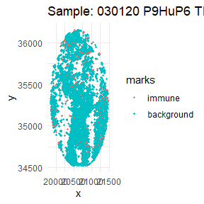
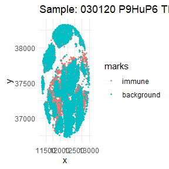
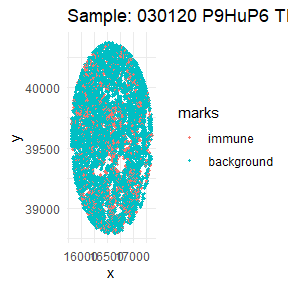
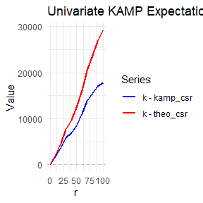
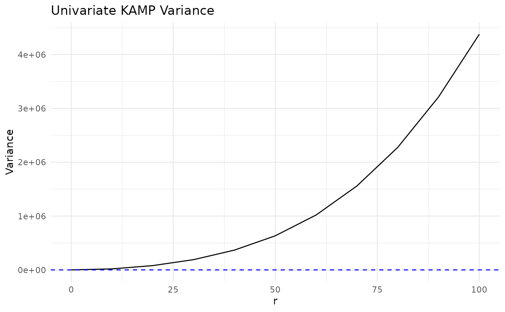
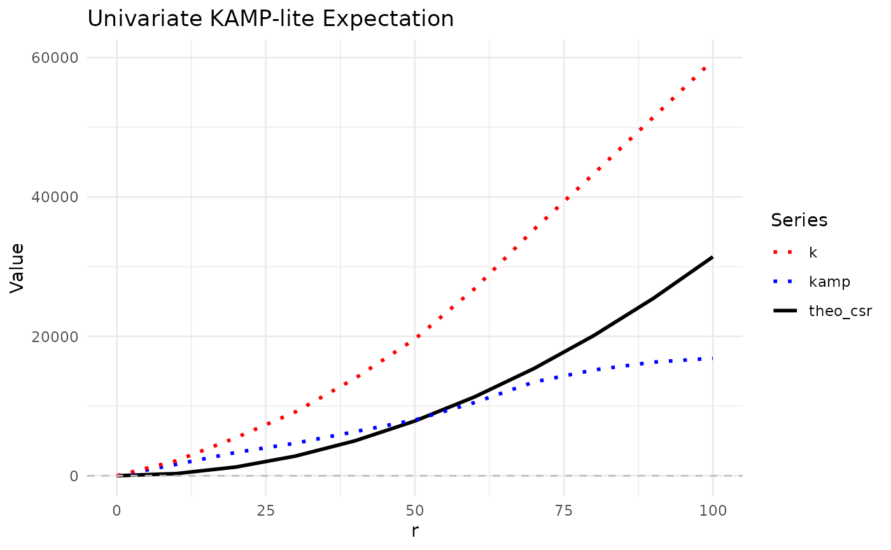
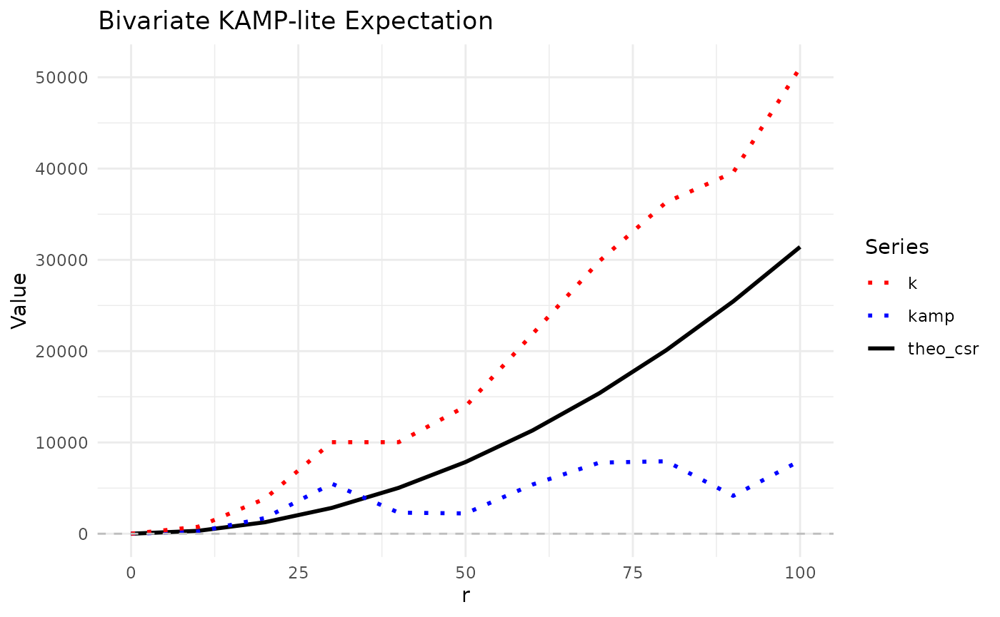
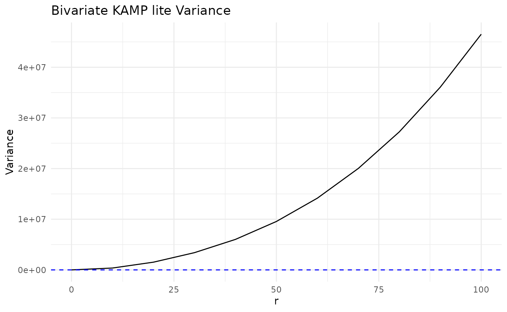

kamp_intro.Rmd| title: “Introduction to KAMP” |
| output: rmarkdown::html_vignette |
| vignette: > |
| % |
| % |
| % |
Introduction
Hello and welcome to the KAMP package! This package is
designed to calculate the expectation and variance of KAMP (K adjustment
by Analytical Moments of the Permutation distribution) for point
patterns with marks. The package is partially built on the
spatstat package, which is a powerful tool for analyzing
spatial data in R. The KAMP package provides functions to
simulate point patterns, calculate the KAMP CSR, and visualize the
results. The package is designed to be user-friendly and easy to use,
with a focus on providing clear and concise output. The package is still
in development, and we welcome any feedback or suggestions for
improvement. If you have any questions or issues, please feel free to
reach out to us.
Setup
library(KAMP)
#library(devtools)
library(tidyverse)
#> ── Attaching core tidyverse packages ──────────────────────── tidyverse 2.0.0 ──
#> ✔ dplyr 1.1.4 ✔ readr 2.1.5
#> ✔ forcats 1.0.1 ✔ stringr 1.5.2
#> ✔ ggplot2 4.0.0 ✔ tibble 3.3.0
#> ✔ lubridate 1.9.4 ✔ tidyr 1.3.1
#> ✔ purrr 1.1.0
#> ── Conflicts ────────────────────────────────────────── tidyverse_conflicts() ──
#> ✖ dplyr::filter() masks stats::filter()
#> ✖ dplyr::lag() masks stats::lag()
#> ℹ Use the conflicted package (<http://conflicted.r-lib.org/>) to force all conflicts to become errors
library(spatstat.random)
#> Loading required package: spatstat.data
#> Loading required package: spatstat.univar
#> spatstat.univar 3.1-4
#> Loading required package: spatstat.geom
#> spatstat.geom 3.6-0
#> spatstat.random 3.4-2
#devtools::load_all()
set.seed(50)Ovarian Dataset
The ovarian_df dataset is a small dataframe that
contains a snapshot of 5 images of ovarian cancer cells from the
HumanOvarianCancerVP() dataset in the
VectraPolarisData package. Each image is represented by a
unique sample ID, and within each image, there are multiple cells with
their respective x and y coordinates. The dataset includes an
immune column that indicates whether the cell is an immune
cell or a background cell. There is also a phenotype column
that indicates the type of immune cell, such as “helper t cells”,
“cytotoxic t cells”, “b cells”, or “macrophages”. The x and
y columns represent the coordinates of the cells in the
image.
data(ovarian_df)
head(ovarian_df)
#> cell_id sample_id x y
#> 1 1 030120 P9HuP6 TMA 1-B_Core[1,1,H]_[20633,35348].im3 20592.9 34524.4
#> 2 2 030120 P9HuP6 TMA 1-B_Core[1,1,H]_[20633,35348].im3 20859.3 34524.4
#> 3 3 030120 P9HuP6 TMA 1-B_Core[1,1,H]_[20633,35348].im3 20591.4 34530.4
#> 4 4 030120 P9HuP6 TMA 1-B_Core[1,1,H]_[20633,35348].im3 20744.7 34528.9
#> 5 5 030120 P9HuP6 TMA 1-B_Core[1,1,H]_[20633,35348].im3 20419.8 34540.8
#> 6 6 030120 P9HuP6 TMA 1-B_Core[1,1,H]_[20633,35348].im3 20741.7 34542.3
#> immune phenotype
#> 1 background other
#> 2 background other
#> 3 background tumor
#> 4 background tumor
#> 5 background other
#> 6 background tumorSince we have a dataframe of multiple images, let’s go through, subset our dataframe by id, and plot it.
ids <- unique(ovarian_df$sample_id)
mark_var <- "immune"
for (id in ids) {
df_sub <- ovarian_df %>% filter(sample_id == id)
w <- convexhull.xy(df_sub$x, df_sub$y)
pp_obj <- ppp(df_sub$x, df_sub$y, window = w, marks = df_sub[[mark_var]])
p <- ggplot(as_tibble(pp_obj), aes(x, y, color = marks)) +
geom_point(size = 0.6) +
labs(title = paste("Sample:", id)) +
theme_minimal()
print(p)
}
KAMP
Now that we have our data, we can use the kamp()
function to calculate the KAMP expectation and variance for both
univariate and bivariate data.
Univariate
We can use the kamp() function to calculate the KAMP
expectation for univariate data.
The kamp() function has several parameters that allow us
to customize the calculation:
ppp_obj: The point pattern object created using theppp()function from thespatstatpackage.rvals: A sequence of distances at which to calculate the K function.univariate: A logical value indicating whether to calculate the univariate K function (default isTRUE).marks_var: The name of the marks variable in the point pattern object (default is"marks").mark1: The value of the marks variable for the first mark (required for univariate).mark2: The value of the marks variable for the second mark (optional for univariate).variance: A logical value indicating whether to calculate the variance (default isFALSE).thin: A logical value indicating whether to use thinning (default isFALSE).p_thin: Percentage to thin by (default is0.5).
For univariate data, we only need to specify one marks variable. In
this case, we set univariate = TRUE and
variance = FALSE (the default).
univariate = TRUEcalculates the K function for one mark versus background.variance = FALSEmeans we only compute the expectation.correctionuses translational correction by default.
Subsetting Data
To perform univariate analysis, we can subset our
ovarian_df dataframe to include only the first image ID and
the immune marks variable.
ids <- unique(ovarian_df$sample_id)
univ_data <- ovarian_df %>% filter(sample_id == ids[1])
mark_var <- "immune"
head(univ_data)
#> cell_id sample_id x y
#> 1 1 030120 P9HuP6 TMA 1-B_Core[1,1,H]_[20633,35348].im3 20592.9 34524.4
#> 2 2 030120 P9HuP6 TMA 1-B_Core[1,1,H]_[20633,35348].im3 20859.3 34524.4
#> 3 3 030120 P9HuP6 TMA 1-B_Core[1,1,H]_[20633,35348].im3 20591.4 34530.4
#> 4 4 030120 P9HuP6 TMA 1-B_Core[1,1,H]_[20633,35348].im3 20744.7 34528.9
#> 5 5 030120 P9HuP6 TMA 1-B_Core[1,1,H]_[20633,35348].im3 20419.8 34540.8
#> 6 6 030120 P9HuP6 TMA 1-B_Core[1,1,H]_[20633,35348].im3 20741.7 34542.3
#> immune phenotype
#> 1 background other
#> 2 background other
#> 3 background tumor
#> 4 background tumor
#> 5 background other
#> 6 background tumorExpectation
We can now calculate the KAMP expectation for the univariate data
using the kamp() function. What we are doing here is
calculating the KAMP expectation for the immune marks
variable against the background cells, using a sequence of distances
from 0 to 100 with a step of 10. Furthermore, we use the option
univariate = TRUE and specify the marks variable for the
first mark as mark1 = "immune" - we are not setting
mark2 since we are only interested in the univariate
case.
What’s returned is a data frame with the following columns:
r: The distance at which the K function is calculated.k: The K function value.theo_csr: The theoretical CSR (Complete Spatial Randomness) value.kamp_csr: The KAMP CSR value.kamp: The difference between K and the KAMP CSR.
univ_kamp <- kamp(univ_data,
rvals = seq(0, 100, by = 10),
univariate = TRUE,
mark_var = mark_var,
mark1 = "immune")
#> We expect the dataframe to be a single point process. If you have multiple point processes, subset the dataframe by ID and please run KAMP separately for each process.
#> The point pattern object has more than 10000 points. Switching to border correction
univ_kamp
#> # A tibble: 11 × 5
#> r k theo_csr kamp_csr kamp
#> <dbl> <dbl> <dbl> <dbl> <dbl>
#> 1 0 0 0 0 0
#> 2 10 2338. 314. 521. 1817.
#> 3 20 5855. 1257. 2108. 3747.
#> 4 30 10460. 2827. 4527. 5933.
#> 5 40 14735. 5027. 7727. 7008.
#> 6 50 20228. 7854. 11713. 8515.
#> 7 60 27485. 11310. 16472. 11013.
#> 8 70 35859. 15394. 22039. 13820.
#> 9 80 43814. 20106. 28302. 15511.
#> 10 90 52296. 25447. 35277. 17019.
#> 11 100 60732. 31416. 42914. 17818.We can visualize KAMP using ggplot2. Plotted here is the
original K from translational edge correctionm, the theoretical CSR, and
the KAMP CSR. The KAMP CSR is the expected value of K under the null
hypothesis of CSR, which is calculated using the analytical moments of
the permutation distribution.
univ_kamp %>%
ggplot(aes(x = r)) +
geom_line(aes(y = theo_csr, color = "theo_csr", linetype = "theo_csr"), size = 1) +
geom_line(aes(y = kamp_csr, color = "kamp_csr", linetype = "kamp_csr"), size = 1) +
geom_line(aes(y = k, color = "k", linetype = "k"), size = 1) +
geom_hline(yintercept = 0, linetype = "dashed", color = "gray") +
scale_color_manual(
values = c(
"theo_csr" = "black",
"kamp_csr" = "blue",
"k" = "red"
)
) +
scale_linetype_manual(
values = c(
"theo_csr" = "solid",
"kamp_csr" = "solid",
"k" = "dotted"
)
) +
labs(
title = "Univariate KAMP Expectation",
x = "r",
y = "Value",
color = "Series",
linetype = "Series"
) +
theme_minimal()
#> Warning: Using `size` aesthetic for lines was deprecated in ggplot2 3.4.0.
#> ℹ Please use `linewidth` instead.
#> This warning is displayed once every 8 hours.
#> Call `lifecycle::last_lifecycle_warnings()` to see where this warning was
#> generated.Looking at the plot, we can see that the KAMP CSR (blue line) is slightly higher than the theoretical CSR (black line) at larger distances. This result aligns with our expectations, as, if we view the plots of the first sample image, the first image is more inhomogenous - i.e. there are large holes/“patches” of empty space that could make the immune cells appear more clustered than expected under CSR.
Let’s plot the differences between k and the theo_csr and kamp_csr to get a better idea:
univ_kamp %>%
ggplot(aes(x = r)) +
geom_line(aes(y = k - kamp_csr, color = "k - kamp_csr", linetype = "k - kamp_csr"), size = 1) +
geom_line(aes(y = k - theo_csr, color = "k - theo_csr", linetype = "k - theo_csr"), size = 1) +
geom_hline(yintercept = 0, linetype = "dashed", color = "gray") +
scale_color_manual(
values = c(
"k - theo_csr" = "red",
"k - kamp_csr" = "blue"
)
) +
scale_linetype_manual(
values = c(
"k - theo_csr" = "solid",
"k - kamp_csr" = "solid"
)
) +
labs(
title = "Univariate KAMP Expectation - differences",
x = "r",
y = "Value",
color = "Series",
linetype = "Series"
) +
theme_minimal()
As expected, the difference between k and the theoretical CSR values tended to be higher than the difference between k and the KAMP CSR values, indicating that the KAMP CSR seems to do a better job accounting for the inhomogenous tissue quality.
Variance
To calculate the variance of the KAMP expectation, we still use the
kamp() function, but we set variance = TRUE. This will
compute the variance of the KAMP expectation at each distance
r. The new output will include all the same columns as
before, but with additional column var that contains the
variance of the KAMP expectation at each distance, and a
p-val column that contains the p-value for the variance
test.
Note: variance = TRUE is not compatible
with thin = TRUE. If both are set to TRUE, a warning will
be thrown and variance will still be calculated, but the results may be
unreliable.
univ_kamp_var <- kamp(univ_data,
rvals = seq(0, 100, by = 10),
univariate = TRUE,
mark_var = mark_var,
mark1 = "immune",
variance = TRUE)
#> We expect the dataframe to be a single point process. If you have multiple point processes, subset the dataframe by ID and please run KAMP separately for each process.
#> The point pattern object has more than 10000 points. Switching to border correction
#> ■■■■ 9% | ETA: 2m
#> ■■■■■■ 18% | ETA: 1m
#> ■■■■■■■■■ 27% | ETA: 1m
#> ■■■■■■■■■■■■ 36% | ETA: 1m
#> ■■■■■■■■■■■■■■■ 45% | ETA: 47s
#> ■■■■■■■■■■■■■■■■■ 55% | ETA: 39s
#> ■■■■■■■■■■■■■■■■■■■■ 64% | ETA: 31s
#> ■■■■■■■■■■■■■■■■■■■■■■■ 73% | ETA: 23s
#> ■■■■■■■■■■■■■■■■■■■■■■■■■■ 82% | ETA: 15s
#> ■■■■■■■■■■■■■■■■■■■■■■■■■■■■ 91% | ETA: 8s
univ_kamp_var
#> # A tibble: 11 × 7
#> r k theo_csr kamp_csr kamp var pvalue
#> <dbl> <dbl> <dbl> <dbl> <dbl> <dbl> <dbl>
#> 1 0 0 0 0 0 0 NaN
#> 2 10 2338. 314. 523. 1816. 18683. 1.43e-40
#> 3 20 5855. 1257. 2108. 3747. 80000. 2.30e-40
#> 4 30 10460. 2827. 4527. 5933. 190355. 2.03e-42
#> 5 40 14735. 5027. 7727. 7008. 367573. 3.34e-31
#> 6 50 20228. 7854. 11713. 8515. 633052. 4.99e-27
#> 7 60 27485. 11310. 16473. 11012. 1019381. 5.33e-28
#> 8 70 35859. 15394. 22040. 13819. 1558782. 8.92e-29
#> 9 80 43814. 20106. 28302. 15511. 2275297. 4.19e-25
#> 10 90 52296. 25447. 35277. 17019. 3211674. 1.09e-21
#> 11 100 60732. 31416. 42914. 17818. 4377696. 8.26e-18We can visualize the variance of the KAMP expectation using
ggplot2:
univ_kamp_var %>%
ggplot(aes(x = r, y = var)) +
geom_line() +
geom_hline(yintercept = 0, linetype = "dashed", color = "blue") +
labs(title = "Univariate KAMP Variance", x = "r", y = "Variance") +
theme_minimal()
Bivariate
Subsetting Data
For bivariate analysis, we can subset our ovarian_df
dataframe to include two types of immune cells and background cells. In
this example, we will use “helper t cells” and “cytotoxic t cells”.
ids <- unique(ovarian_df$sample_id)
biv_data <- ovarian_df %>%
filter(sample_id == ids[1]) #%>%
#filter(phenotype %in% c("helper t cells", "cytotoxic t cells", "other")) %>%
#droplevels()
mark_var <- "phenotype"
head(biv_data)
#> cell_id sample_id x y
#> 1 1 030120 P9HuP6 TMA 1-B_Core[1,1,H]_[20633,35348].im3 20592.9 34524.4
#> 2 2 030120 P9HuP6 TMA 1-B_Core[1,1,H]_[20633,35348].im3 20859.3 34524.4
#> 3 3 030120 P9HuP6 TMA 1-B_Core[1,1,H]_[20633,35348].im3 20591.4 34530.4
#> 4 4 030120 P9HuP6 TMA 1-B_Core[1,1,H]_[20633,35348].im3 20744.7 34528.9
#> 5 5 030120 P9HuP6 TMA 1-B_Core[1,1,H]_[20633,35348].im3 20419.8 34540.8
#> 6 6 030120 P9HuP6 TMA 1-B_Core[1,1,H]_[20633,35348].im3 20741.7 34542.3
#> immune phenotype
#> 1 background other
#> 2 background other
#> 3 background tumor
#> 4 background tumor
#> 5 background other
#> 6 background tumorExpectation
To calculate the KAMP expectation for bivariate data, we set
univariate = FALSE and specify the marks variables for both
marks.
biv_kamp <- kamp(df = biv_data,
rvals = seq(0, 100, by = 10),
univariate = FALSE,
mark_var = mark_var,
mark1 = "helper t cell",
mark2 = "cytotoxic t cell")
#> We expect the dataframe to be a single point process. If you have multiple point processes, subset the dataframe by ID and please run KAMP separately for each process.
#> The point pattern object has more than 10000 points. Switching to border correction
head(biv_kamp)
#> # A tibble: 6 × 5
#> r k theo_csr kamp_csr kamp
#> <dbl> <dbl> <dbl> <dbl> <dbl>
#> 1 0 0 0 0 0
#> 2 10 663. 314. 521. 142.
#> 3 20 2667. 1257. 2108. 559.
#> 4 30 7386. 2827. 4527. 2859.
#> 5 40 8745. 5027. 7727. 1017.
#> 6 50 13191. 7854. 11713. 1478.
biv_kamp %>%
ggplot(aes(x = r)) +
geom_line(aes(y = theo_csr, color = "theo_csr", linetype = "theo_csr"), size = 1) +
geom_line(aes(y = kamp, color = "kamp", linetype = "kamp"), size = 1) +
geom_line(aes(y = k, color = "k", linetype = "k"), size = 1) +
geom_hline(yintercept = 0, linetype = "dashed", color = "gray") +
scale_color_manual(
values = c(
"theo_csr" = "black",
"kamp" = "blue",
"k" = "red"
)
) +
scale_linetype_manual(
values = c(
"theo_csr" = "solid",
"kamp" = "dotted",
"k" = "dotted"
)
) +
labs(
title = "Bivariate KAMP Expectation",
x = "r",
y = "Value",
color = "Series",
linetype = "Series"
) +
theme_minimal()Variance
biv_kamp_var <- kamp(df = biv_data,
rvals = seq(0, 100, by = 10),
univariate = FALSE,
mark_var = mark_var,
mark1 = "helper t cell",
mark2 = "cytotoxic t cell",
variance = TRUE)
#> We expect the dataframe to be a single point process. If you have multiple point processes, subset the dataframe by ID and please run KAMP separately for each process.
#> The point pattern object has more than 10000 points. Switching to border correction
#> ■■■■ 9% | ETA: 1m
#> ■■■■■■ 18% | ETA: 1m
#> ■■■■■■■■■ 27% | ETA: 1m
#> ■■■■■■■■■■■■ 36% | ETA: 1m
#> ■■■■■■■■■■■■■■■ 45% | ETA: 44s
#> ■■■■■■■■■■■■■■■■■ 55% | ETA: 37s
#> ■■■■■■■■■■■■■■■■■■■■ 64% | ETA: 30s
#> ■■■■■■■■■■■■■■■■■■■■■■■ 73% | ETA: 22s
#> ■■■■■■■■■■■■■■■■■■■■■■■■■■ 82% | ETA: 15s
#> ■■■■■■■■■■■■■■■■■■■■■■■■■■■■ 91% | ETA: 7s
head(biv_kamp_var)
#> # A tibble: 6 × 6
#> r k theo_csr kamp_csr var pvalue
#> <dbl> <dbl> <dbl> <dbl> <dbl> <dbl>
#> 1 0 0 0 0 0 NaN
#> 2 10 663. 314. 523. 173055. 0.368
#> 3 20 2667. 1257. 2108. 716375. 0.255
#> 4 30 7386. 2827. 4527. 1609555. 0.0121
#> 5 40 8745. 5027. 7727. 2907985. 0.275
#> 6 50 13191. 7854. 11713. 4691046. 0.248
biv_kamp_var %>%
ggplot(aes(x = r, y = var)) +
geom_line() +
geom_hline(yintercept = 0, linetype = "dashed", color = "blue") +
labs(title = "Bivariate KAMP Variance", x = "r", y = "Variance") +
theme_minimal()
KAMP-lite (Thinning)
KAMP-lite refers to running KAMP with a thinned point pattern using
thin = TRUE and specifying p_thin between 0
and 1. This helps with performance on large datasets.
Univariate
Expectation
ids <- unique(ovarian_df$sample_id)
mark_var <- "immune"
univ_data <- ovarian_df %>% filter(sample_id == ids[1])
univ_kamp_lite <- kamp(df = univ_data,
rvals = seq(0, 100, by = 10),
univariate = TRUE,
mark_var = mark_var,
mark1 = "immune",
thin = TRUE,
p_thin = 0.3)
#> We expect the dataframe to be a single point process. If you have multiple point processes, subset the dataframe by ID and please run KAMP separately for each process.
#> The point pattern object has more than 10000 points. Switching to border correction
univ_kamp_lite
#> # A tibble: 11 × 5
#> r k theo_csr kamp_csr kamp
#> <dbl> <dbl> <dbl> <dbl> <dbl>
#> 1 0 0 0 0 0
#> 2 10 2162. 314. 524. 1638.
#> 3 20 5468. 1257. 2118. 3350.
#> 4 30 9179. 2827. 4499. 4680.
#> 5 40 13995. 5027. 7664. 6331.
#> 6 50 19611. 7854. 11600. 8011.
#> 7 60 26824. 11310. 16325. 10499.
#> 8 70 35349. 15394. 21893. 13456.
#> 9 80 43318. 20106. 28137. 15181.
#> 10 90 51432. 25447. 35125. 16307.
#> 11 100 59610. 31416. 42752. 16858.
univ_kamp_lite %>%
ggplot(aes(x = r)) +
geom_line(aes(y = theo_csr, color = "theo_csr", linetype = "theo_csr"), size = 1) +
geom_line(aes(y = kamp, color = "kamp", linetype = "kamp"), size = 1) +
geom_line(aes(y = k, color = "k", linetype = "k"), size = 1) +
geom_hline(yintercept = 0, linetype = "dashed", color = "gray") +
scale_color_manual(
values = c(
"theo_csr" = "black",
"kamp" = "blue",
"k" = "red"
)
) +
scale_linetype_manual(
values = c(
"theo_csr" = "solid",
"kamp" = "dotted",
"k" = "dotted"
)
) +
labs(
title = "Univariate KAMP-lite Expectation",
x = "r",
y = "Value",
color = "Series",
linetype = "Series"
) +
theme_minimal()
Variance
univ_kamp_lite_var <- kamp(df = univ_data,
rvals = seq(0, 100, by = 10),
univariate = TRUE,
mark_var = mark_var,
mark1 = "immune",
thin = TRUE,
p_thin = 0.3,
variance = TRUE) # should display a warning message
#> We expect the dataframe to be a single point process. If you have multiple point processes, subset the dataframe by ID and please run KAMP separately for each process.
#> Variance calculation is not supported with KAMP lite
#> Variance calculation with KAMP lite is not recommended. Variance will still be computed, but interpret with caution.
#> The point pattern object has more than 10000 points. Switching to border correction
#> ■■■■ 9% | ETA: 37s
#> ■■■■■■ 18% | ETA: 33s
#> ■■■■■■■■■ 27% | ETA: 29s
#> ■■■■■■■■■■■■ 36% | ETA: 26s
#> ■■■■■■■■■■■■■■■ 45% | ETA: 22s
#> ■■■■■■■■■■■■■■■■■ 55% | ETA: 18s
#> ■■■■■■■■■■■■■■■■■■■■ 64% | ETA: 15s
#> ■■■■■■■■■■■■■■■■■■■■■■■ 73% | ETA: 11s
#> ■■■■■■■■■■■■■■■■■■■■■■■■■■ 82% | ETA: 7s
#> ■■■■■■■■■■■■■■■■■■■■■■■■■■■■ 91% | ETA: 4s
univ_kamp_lite_var
#> # A tibble: 11 × 7
#> r k theo_csr kamp_csr kamp var pvalue
#> <dbl> <dbl> <dbl> <dbl> <dbl> <dbl> <dbl>
#> 1 0 0 0 0 0 0 NaN
#> 2 10 1964. 314. 530. 1434. 41463. 9.52e-13
#> 3 20 6079. 1257. 2112. 3968. 172314. 5.98e-22
#> 4 30 11184. 2827. 4538. 6647. 399411. 3.61e-26
#> 5 40 16411. 5027. 7745. 8666. 744554. 4.91e-24
#> 6 50 20947. 7854. 11735. 9212. 1239598. 6.46e-17
#> 7 60 27720. 11310. 16462. 11258. 1928490. 2.60e-16
#> 8 70 35789. 15394. 22025. 13764. 2869955. 2.24e-16
#> 9 80 43263. 20106. 28282. 14981. 4070528. 5.63e-14
#> 10 90 51724. 25447. 35275. 16449. 5615689. 1.94e-12
#> 11 100 60087. 31416. 42967. 17120. 7546680. 2.30e-10Bivariate
ids <- unique(ovarian_df$sample_id)
biv_data <- ovarian_df %>%
filter(sample_id == ids[1]) #%>%
#filter(phenotype %in% c("helper t cell", "cytotoxic t cell", "other")) %>%
#droplevels()
mark_var <- "phenotype"
head(biv_data)
#> cell_id sample_id x y
#> 1 1 030120 P9HuP6 TMA 1-B_Core[1,1,H]_[20633,35348].im3 20592.9 34524.4
#> 2 2 030120 P9HuP6 TMA 1-B_Core[1,1,H]_[20633,35348].im3 20859.3 34524.4
#> 3 3 030120 P9HuP6 TMA 1-B_Core[1,1,H]_[20633,35348].im3 20591.4 34530.4
#> 4 4 030120 P9HuP6 TMA 1-B_Core[1,1,H]_[20633,35348].im3 20744.7 34528.9
#> 5 5 030120 P9HuP6 TMA 1-B_Core[1,1,H]_[20633,35348].im3 20419.8 34540.8
#> 6 6 030120 P9HuP6 TMA 1-B_Core[1,1,H]_[20633,35348].im3 20741.7 34542.3
#> immune phenotype
#> 1 background other
#> 2 background other
#> 3 background tumor
#> 4 background tumor
#> 5 background other
#> 6 background tumorExpectation
biv_kamp_lite <- kamp(df = biv_data,
rvals = seq(0, 100, by = 10),
univariate = FALSE,
mark_var = mark_var,
mark1 = "helper t cell",
mark2 = "cytotoxic t cell",
thin = TRUE,
p_thin = 0.3)
#> We expect the dataframe to be a single point process. If you have multiple point processes, subset the dataframe by ID and please run KAMP separately for each process.
#> The point pattern object has more than 10000 points. Switching to border correction
head(biv_kamp_lite)
#> # A tibble: 6 × 5
#> r k theo_csr kamp_csr kamp
#> <dbl> <dbl> <dbl> <dbl> <dbl>
#> 1 0 0 0 0 0
#> 2 10 759. 314. 528. 231.
#> 3 20 3830. 1257. 2115. 1715.
#> 4 30 10028. 2827. 4543. 5484.
#> 5 40 10028. 5027. 7720. 2308.
#> 6 50 13948. 7854. 11725. 2223.
biv_kamp_lite %>%
ggplot(aes(x = r)) +
geom_line(aes(y = theo_csr, color = "theo_csr", linetype = "theo_csr"), size = 1) +
geom_line(aes(y = kamp, color = "kamp", linetype = "kamp"), size = 1) +
geom_line(aes(y = k, color = "k", linetype = "k"), size = 1) +
geom_hline(yintercept = 0, linetype = "dashed", color = "gray") +
scale_color_manual(
values = c(
"theo_csr" = "black",
"kamp" = "blue",
"k" = "red"
)
) +
scale_linetype_manual(
values = c(
"theo_csr" = "solid",
"kamp" = "dotted",
"k" = "dotted"
)
) +
labs(
title = "Bivariate KAMP-lite Expectation",
x = "r",
y = "Value",
color = "Series",
linetype = "Series"
) +
theme_minimal()
Variance
biv_kamp_lite_var <- kamp(df = biv_data,
rvals = seq(0, 100, by = 10),
univariate = FALSE,
mark_var = mark_var,
mark1 = "helper t cell",
mark2 = "cytotoxic t cell",
variance = TRUE,
thin = TRUE,
p_thin = 0.3) # should display a warning message
#> We expect the dataframe to be a single point process. If you have multiple point processes, subset the dataframe by ID and please run KAMP separately for each process.
#> Variance calculation is not supported with KAMP lite
#> Variance calculation with KAMP lite is not recommended. Variance will still be computed, but interpret with caution.
#> The point pattern object has more than 10000 points. Switching to border correction
#> ■■■■ 9% | ETA: 36s
#> ■■■■■■ 18% | ETA: 34s
#> ■■■■■■■■■ 27% | ETA: 30s
#> ■■■■■■■■■■■■ 36% | ETA: 27s
#> ■■■■■■■■■■■■■■■ 45% | ETA: 23s
#> ■■■■■■■■■■■■■■■■■ 55% | ETA: 19s
#> ■■■■■■■■■■■■■■■■■■■■ 64% | ETA: 15s
#> ■■■■■■■■■■■■■■■■■■■■■■■ 73% | ETA: 11s
#> ■■■■■■■■■■■■■■■■■■■■■■■■■■ 82% | ETA: 7s
#> ■■■■■■■■■■■■■■■■■■■■■■■■■■■■ 91% | ETA: 4s
head(biv_kamp_lite_var)
#> # A tibble: 6 × 6
#> r k theo_csr kamp_csr var pvalue
#> <dbl> <dbl> <dbl> <dbl> <dbl> <dbl>
#> 1 0 0 0 0 0 NaN
#> 2 10 0 314. 524. 366275. 0.807
#> 3 20 2104. 1257. 2138. 1523941. 0.511
#> 4 30 6365. 2827. 4609. 3399440. 0.170
#> 5 40 7795. 5027. 7830. 6014528. 0.506
#> 6 50 14284. 7854. 11862. 9554116. 0.217
biv_kamp_lite_var %>%
ggplot(aes(x = r, y = var)) +
geom_line() +
geom_hline(yintercept = 0, linetype = "dashed", color = "blue") +
labs(title = "Bivariate KAMP lite Variance", x = "r", y = "Variance") +
theme_minimal()